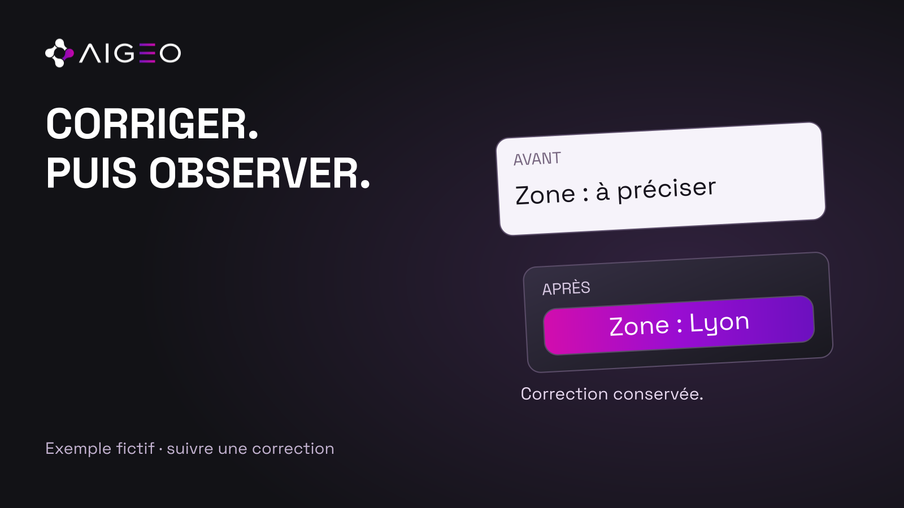
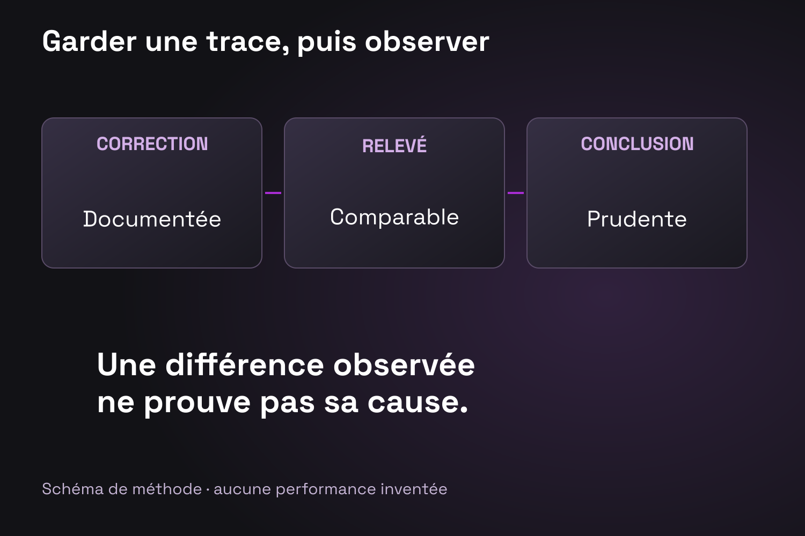

Vous avez clarifié une offre, corrigé une information ou réécrit une page importante. Le changement est livré et mérite d’être enregistré. Il reste ensuite à examiner ce que l’on peut observer, sans présenter la correction comme un résultat de visibilité déjà acquis.
Une méthode simple consiste à conserver un journal des interventions et des relevés dont les conditions sont comparables. Elle aide à comprendre une évolution, à repérer les inconnues et à choisir la prochaine action.
Enregistrer la correction
Dans le journal proposé par AIGEO, chaque intervention indique la page concernée, le fait modifié, la version précédente, la date et la personne responsable. Ajoutez le motif du changement : contradiction corrigée, offre précisée ou information rendue plus explicite.
Cette trace doit rester assez courte pour être tenue à jour. Son utilité est de permettre à une autre personne de comprendre ce qui a été fait, sans parcourir tout l’historique des échanges.
Si plusieurs pages changent en même temps, conservez leur liste. Une observation ultérieure ne pourra pas être reliée automatiquement à une seule modification.
Préparer un point de départ
Lorsque vous disposez d’un relevé antérieur, gardez la demande, l’environnement utilisé, la date et la réponse complète. Une capture isolée sans contexte est difficile à comparer à un nouveau relevé.
Si aucun point de départ n’existe, dites-le. Vous pourrez observer l’état suivant la correction, mais pas reconstituer honnêtement un avant que vous n’avez pas conservé.
Le protocole peut également préciser les limites de l’accès disponible. Une mesure réalisée dans un environnement ne décrit pas nécessairement toutes les interfaces d’un même fournisseur.
Attendre une observation exploitable
Pour Google Search, la documentation indique que les délais de réexploration peuvent varier ; l’affichage du contenu n’est pas garanti. Cette limite porte sur Google et ne fixe pas un délai universel pour les autres services.
Évitez donc de choisir une échéance uniquement pour pouvoir annoncer un résultat rapidement. Préparez le prochain relevé en fonction du contexte, puis documentez ce qui est accessible à cette date.
Un état « encore non vérifié » est une information de suivi. Il permet de distinguer une intervention terminée d’un contrôle qui reste à effectuer.

Exemple illustratif
Une entreprise fictive corrige sa zone de service sur une page. Elle conserve le texte précédent, la nouvelle version et la date. Lors d’un relevé ultérieur, une réponse présente une formulation différente.
L’équipe peut constater cette différence. Elle ne peut pas attribuer automatiquement tout le changement à la page corrigée : d’autres contenus ou conditions ont pu évoluer entre les observations. L’exemple décrit une manière de raisonner, sans résultat client ni mesure de moteur inventés.
Comparer sans effacer les limites
Votre compte rendu peut distinguer trois colonnes : changement livré, différence observée et conclusion permise. Cette dernière reste proportionnée aux preuves disponibles.
Si une différence est visible mais que son origine reste incertaine, conservez les deux informations. Elles peuvent justifier un nouveau relevé ou une vérification supplémentaire sans devenir une promesse commerciale.
La comparaison doit également garder les autres interventions connues dans la période. Ce journal de contexte aide à éviter les explications trop simples.
Décider de la suite
À la fin du contrôle, choisissez une action précise : maintenir la correction, compléter une information, vérifier un autre support ou continuer l’observation. Une décision opérationnelle est plus utile qu’un verdict global sur « l’optimisation IA ».
Commencez par une page et une correction documentée. Vous pourrez élargir le suivi à mesure que votre équipe apprend à conserver des observations exploitables.
Pour préparer le périmètre d’un relevé de visibilité IA, retrouvez AIGEO sur aigeoconseil.com.
Source
Google Search Central — Fonctionnalités IA et votre site, consultée le 3 octobre 2026. Le journal et la grille de comparaison sont une méthode AIGEO.
Sources consultées
- Google Search Central — Fonctionnalités IA et votre site · vérifiée le 2026-10-12T12:25:35.740Z